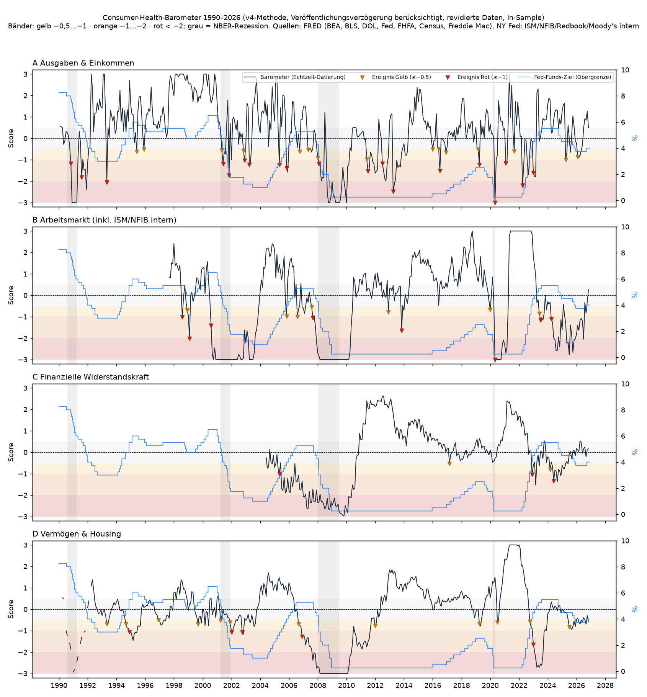
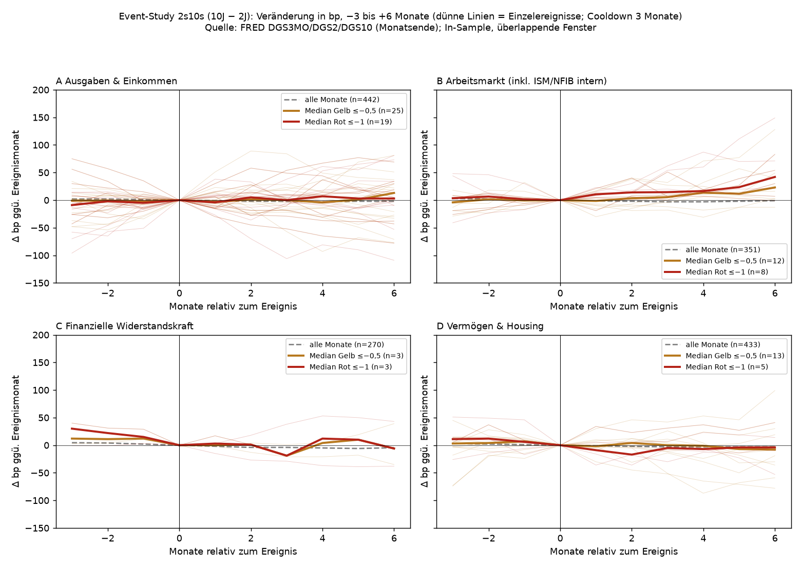
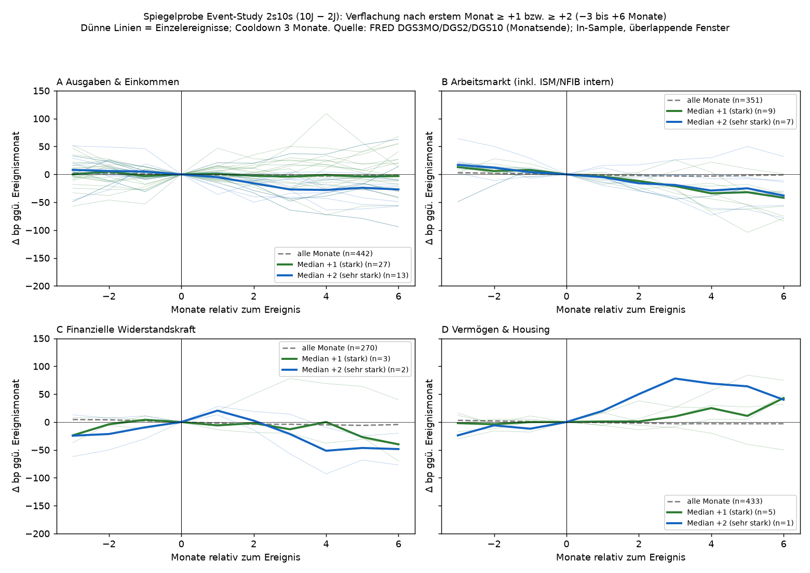
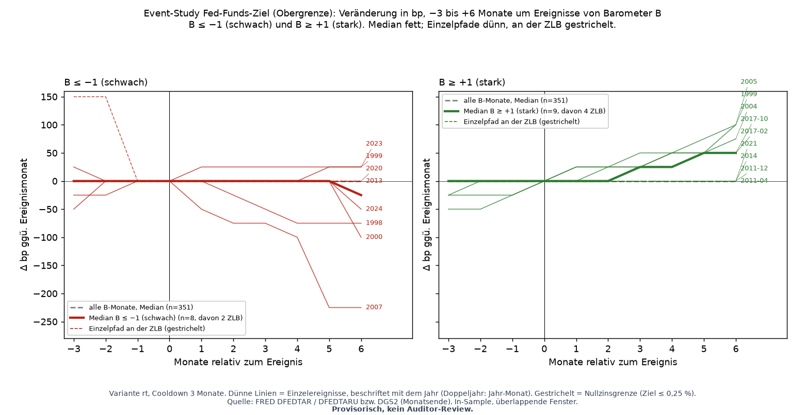
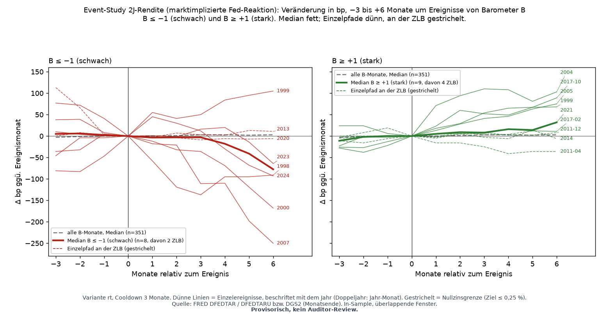
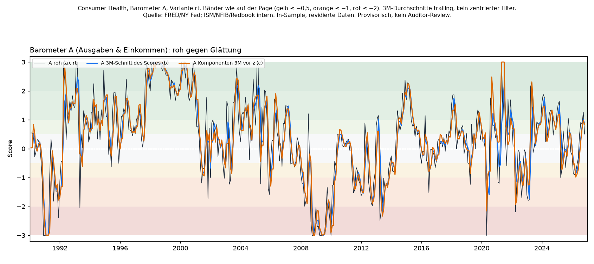

Barometer – Zusammenfassung (−3 bis +3)
Methode in Kürze
- Vier Barometer: A Ausgaben & Einkommen (Spec-Fragen 1–2), B Arbeitsmarkt (Frage 3), C finanzielle Widerstandskraft (Frage 4), D Vermögen & Housing (Wealth Effect, neu). Ein «Early-Warning»-Barometer würde Kacheln doppelt zählen; die Ampeln bleiben in den Panels. D trennt den Vermögenskanal bewusst von C (Schulden/Delinquenz).
- Standardisierung (unverändert): z = Vorzeichen × (Wert − Zentrum) / SD, Referenzfenster 2010–2019 (SCE ab 06/2013), z auf ±3 gekappt, gewichtetes Mittel, Skalierung k = 1/SD des Rohindex im Referenzfenster, erneut ±3. +3 = gesund. Kein validiertes Modell. Als methodische Alternative erwähnen wir den ersten Hauptkomponenten-Faktor (PCA), so beim Weekly Economic Index (Lewis, Mertens, Stock, Trivedi, NY Fed Staff Report 920; nur zitiert, in v4 nicht gerechnet).
- v3-Gewichte, gestützt auf die Literaturrecherche (12 Papers, Recherche-Spezialist):
- B, Umfragen: SCE-Gewicht von 30 % auf 15 % gesenkt, weil Sentiment über Einkommen und Ausgaben hinaus nur wenig Zusatzinformation liefert (Carroll, Fuhrer, Wilcox 1994; Ludvigson 2004). Die 30-Prozent-Variante und die Variante ohne NFIB/ISM stehen als Sensitivität auf der B-Karte. Die Panel-Ampeln sind unverändert. NFIB ist eine Unternehmensumfrage, kein Hartdatum.
- C, Frühwarnung: Schuldendienstquote TDSP (Drehmann, Juselius, BIS WP 421: DSR ist auf kurze Sicht der robusteste Frühindikator) und 3-Jahres-Änderung der Haushaltsverschuldung relativ zum BIP (Mian, Sufi, Verner 2017) sind Kernkomponenten (je 15 %). Der OFR-Haushaltsstressindex (Brief 24-06) ist ein optionaler Kandidat für Stage 2, hier nicht eingerechnet.
- D, Housing > Aktien: MPC aus Immobilienvermögen typischerweise rund 2,5–5 Cent pro USD (Guren et al. 2021: 2,4–3,3; Mian/Rao/Sufi 2013: 5–7), aus Aktien rund 1–3 Cent (Beach, Gamber, Moran, FEDS Note 2025: aggregiert 3,3–3,5 Cent sowie Aufteilung nach Einkommen aus der Note selbst; Werte nach Anlageklasse in der Recherche teils über Sekundärquellen; Chodorow-Reich, Nenov, Simsek 2021: 3,2, mit Lag 1–2 Jahre). Deshalb wiegen Hauspreise, Immobilienvermögen und Wohnungsbau zusammen deutlich mehr als die Aktienkomponente (10 %). Nettovermögen (Z.1) hat nur Gewicht 6, weil es Aktien und Immobilien bereits enthält.
- Verteilung des Wealth Effect: Der Bestand an Aktienvermögen liegt stark bei den oberen Einkommens- und Vermögensdezilen; ihr Beitrag zum aggregierten Konsumimpuls ist deshalb gross. Die Konsumneigung pro Dollar ist umgekehrt bei unteren Einkommen und hoher Belehnung höher (Beach et al. 2025: Top-20 % ≈ 0,8 Cent, Bottom-80 % ≈ 7,5 Cent; Di Maggio, Kermani, Majlesi 2020, schwedische Daten). Die Fed-Note führt den Rückgang der aggregierten MPC über 20 Jahre auf stärkere Vermögenskonzentration zurück. Barometer D ist ein aggregierter Impuls, keine Aussage über untere Dezile.
- Veraltete/fehlende Eingaben: Gewicht ×0.5 bei Alter > 21 / 75 / 135 Tage (Woche/Monat/Quartal), bei doppeltem Alter 0. Nur Redbook wird manuell zusätzlich ×0.5 (Woche 14.11., Folgewoche fehlt, Quelle nicht autorisiert). Unter 60 % Abdeckung: «n/a». Platzhalter ohne Gewicht. Z.1-Reihen (Nettovermögen, Immobilienvermögen, Aktienmarktwert), TDSP und Schulden/BIP sind auf das Quartalsende datiert (Q2 2026 = 2026-06-30, Alter 151 Tage) und zählen halb. Vormonatswerte der Barometer sind mit dem heutigen Datenstand zurückgerechnet, keine Echtzeit-Vintages.
- Lizenz in D: Hauspreise = FHFA Purchase-Only (öffentlich), nicht Case-Shiller (S&P/Cotality, lizenziert). Aktien im Barometer = Z.1-Marktwert der Unternehmensaktien (NCBEILQ027S, öffentlich, quartalsweise). S&P 500 nur als Kachel (FRED-Tag copyrighted third party; Historie in FRED nur ab 2016, daher kein z gegen 2010–2019). Baa-Spread intern (Moody’s). ICE BofA HY OAS intern, Historie ab 11/2023 zu kurz für das Referenzfenster, nicht im Barometer.
- Reproduzierbar:
python3 compute_barometers.pyschreibtdata/barometers_v4.json,barometer_components_v4.csv,barometer_history_v4.csv. Seite:refresh_page.py(baut die Page aus Compute und Builder-Kette und schreibt ein Manifest). v3-Dateien bleiben unverändert. Der Datenlauf 06:00 nutzt denselben Compute-Stand (Quartalsende-Stempel, ISM-Dienste-Snapshot falls neuer als ism_long.csv).
Barometer A · Ausgaben & Einkommen: Komponenten, Gewichte, z-Werte
| Kachel | Komponente | Wert | Daten per (Periodenende) | Zentrum | SD (Ref.) | Vz. | z (±3) | Gewicht nom. | Gewicht eff. | Beitrag (skaliert) | Hinweis |
|---|---|---|---|---|---|---|---|---|---|---|---|
| A1 | Reale PCE, YoY | 2.50 % | 2026-10-31 | 2.29 | 0.80 | + | +0.26 | 15 | 15.0 | +0.07 | |
| A1 | Reale PCE, 3M annualisiert | 2.86 % | 2026-10-31 | 2.41 | 1.41 | + | +0.32 | 20 | 20.0 | +0.11 | |
| A3 | Reale PCE Dienste, 3M ann. | 1.78 % | 2026-10-31 | 1.86 | 1.24 | + | -0.06 | 12 | 12.0 | -0.01 | |
| A3 | Reale PCE Waren, 3M ann. | 5.30 % | 2026-10-31 | 3.63 | 3.08 | + | +0.54 | 8 | 8.0 | +0.07 | |
| B1 | Reales verfügbares Einkommen, YoY | 1.61 % | 2026-10-31 | 2.45 | 1.72 | + | -0.49 | 20 | 20.0 | -0.16 | |
| B1 | Reales verfügbares Einkommen, 3M ann. | 1.45 % | 2026-10-31 | 2.63 | 4.06 | + | -0.29 | 20 | 20.0 | -0.10 | |
| A2 | Redbook SSS YoY (nominal) intern | 9.50 % | 2026-11-14 | 3.12 | 1.62 | + | +3.00 | 5 | 2.5 | +0.13 | intern, Sekundärquelle, nominal (preisgetrieben), Gewicht klein; Wo. 14.11.; Wochenwert 21.11. nicht verfügbar; Quelle nicht autorisiert |
Barometer B · Arbeitsmarkt: Komponenten, Gewichte, z-Werte
| Kachel | Komponente | Wert | Daten per (Periodenende) | Zentrum | SD (Ref.) | Vz. | z (±3) | Gewicht nom. | Gewicht eff. | Beitrag (skaliert) | Hinweis |
|---|---|---|---|---|---|---|---|---|---|---|---|
| W1 | Erstanträge: 4W-Schnitt über 52W-Tief | 0.38 % | 2026-11-21 | 3.36 | 3.77 | − | +0.79 | 18 | 18.0 | +0.37 | |
| W2 | Fortgesetzte Anträge, YoY 4W-Schnitt | -11.55 % | 2026-11-14 | -11.33 | 6.41 | − | +0.04 | 12 | 12.0 | +0.01 | |
| C0 | Arbeitslosenquote, Δ 12M | -0.30 pp | 2026-10-31 | 0.00 | 0.51 | − | +0.59 | 12 | 12.0 | +0.18 | |
| C0 | Nonfarm Payrolls, 3M-Schnitt der Monatsänderung | 137.00 Tsd. | 2026-10-31 | 180.54 | 70.51 | + | -0.62 | 7 | 7.0 | -0.11 | |
| W4 | NFIB Einstellungspläne, 3M-Schnitt intern | 17.33 net % | 2026-10-31 | 10.41 | 6.90 | + | +1.00 | 12 | 12.0 | +0.31 | intern |
| W6 | ISM Employment Industrie intern | 52.40 Index | 2026-10-31 | 50.00 | 3.74 | + | +0.64 | 6 | 6.0 | +0.10 | intern; Neutralpunkt 50 |
| W6 | ISM Employment Dienste intern | 51.40 Index | 2026-10-31 | 50.00 | 2.99 | + | +0.47 | 5 | 5.0 | +0.06 | intern; Neutralpunkt 50 |
| W3 | JOLTS Quits Rate, 3M-Schnitt | 1.97 % | 2026-09-30 | 1.87 | 0.32 | + | +0.32 | 13 | 13.0 | +0.11 | |
| W7 | SCE Wahrsch. Jobverlust | 13.94 % | 2026-10-31 | 14.71 | 1.10 | − | +0.70 | 5 | 5.0 | +0.09 | v3: Umfragegewicht in B insgesamt 15 % (Carroll/Fuhrer/Wilcox 1994; Ludvigson 2004) |
| W8 | SCE Wahrsch. Jobfund | 46.51 % | 2026-10-31 | 55.13 | 4.37 | + | -1.97 | 5 | 5.0 | -0.26 | |
| W9 | SCE Erwartung höherer Arbeitslosigkeit | 45.31 % | 2026-10-31 | 36.85 | 2.26 | − | -3.00 | 5 | 5.0 | -0.39 |
Barometer C · Finanzielle Widerstandskraft: Komponenten, Gewichte, z-Werte
| Kachel | Komponente | Wert | Daten per (Periodenende) | Zentrum | SD (Ref.) | Vz. | z (±3) | Gewicht nom. | Gewicht eff. | Beitrag (skaliert) | Hinweis |
|---|---|---|---|---|---|---|---|---|---|---|---|
| W12 | Sparquote 3M-Schnitt, Δ 12M | -1.20 pp | 2026-10-31 | 0.00 | 1.19 | + | -1.01 | 12 | 12.0 | -0.26 | |
| W29 | Schuldendienstquote (TDSP) | 11.11 % | 2026-06-30 | 12.11 | 0.76 | − | +1.30 | 15 | 7.5 | +0.21 | Drehmann/Juselius BIS WP 421; Q2 2026, oft stale; Alter 151 d > 135 d |
| W30 | Haushaltsverschuldung/BIP, Δ 3 Jahre | -5.03 pp | 2026-06-30 | 0.00 | 4.06 | − | +1.24 | 15 | 7.5 | +0.20 | Mian/Sufi/Verner 2017; CMDEBT/GDP, (d); Alter 151 d > 135 d |
| W19 | SLOOS Kreditkarten-Standards (Netto % Verschärfung) | 4.00 Netto % | 2026-10-31 | 0.00 | 8.26 | − | -0.48 | 8 | 8.0 | -0.08 | Neutralpunkt 0 |
| W20 | SLOOS Auto-Standards (Netto % Verschärfung) | -2.10 Netto % | 2026-10-31 | 0.00 | 9.57 | − | +0.22 | 4 | 4.0 | +0.02 | Neutralpunkt 0 |
| W13 | HHDC Übergang 30+ Kreditkarten, Δ Vorjahr | -0.49 pp | 2026-09-30 | 0.00 | 1.36 | − | +0.36 | 7 | 7.0 | +0.05 | 4Q-Summe, Δ ggü. Vorjahresquartal |
| W14 | HHDC Übergang 30+ Auto, Δ Vorjahr | 0.17 pp | 2026-09-30 | 0.00 | 0.82 | − | -0.21 | 7 | 7.0 | -0.03 | |
| W15 | HHDC Übergang 90+ Kreditkarten, Δ Vorjahr | -0.18 pp | 2026-09-30 | 0.00 | 1.27 | − | +0.14 | 6 | 6.0 | +0.02 | |
| W16 | HHDC Übergang 90+ Auto, Δ Vorjahr | 0.03 pp | 2026-09-30 | 0.00 | 0.38 | − | -0.08 | 6 | 6.0 | -0.01 | |
| W17 | HHDC Bestand 90+ Kreditkarten, Δ Vorjahr | 0.49 pp | 2026-09-30 | 0.00 | 1.10 | − | -0.45 | 7 | 7.0 | -0.07 | Bestand, getrennt von Übergängen |
| W18 | HHDC Bestand 90+ Auto, Δ Vorjahr | 0.64 pp | 2026-09-30 | 0.00 | 0.44 | − | -1.44 | 8 | 8.0 | -0.25 | |
| W10 | SCE Wahrsch. verpasste Mindestzahlung | 13.78 % | 2026-10-31 | 12.79 | 1.35 | − | -0.73 | 5 | 5.0 | -0.08 | v3: Umfragegewicht in C gesenkt |
Barometer D · Vermögen & Housing: Komponenten, Gewichte, z-Werte
| Kachel | Komponente | Wert | Daten per (Periodenende) | Zentrum | SD (Ref.) | Vz. | z (±3) | Gewicht nom. | Gewicht eff. | Beitrag (skaliert) | Hinweis |
|---|---|---|---|---|---|---|---|---|---|---|---|
| F4 | FHFA Purchase-Only HPI, YoY | 2.52 % | 2026-09-30 | 3.54 | 3.81 | + | -0.27 | 18 | 18.0 | -0.12 | öffentlich; Case-Shiller nicht verwendet (Lizenz S&P/Cotality) |
| F3 | Immobilienvermögen der Haushalte, YoY (Z.1) | 2.87 % | 2026-06-30 | 4.00 | 4.58 | + | -0.25 | 12 | 6.0 | -0.04 | HNOREMQ027S; überlappt teilweise mit HPI; Alter 151 d > 135 d |
| F6 | Housing Starts, YoY des 3M-Schnitts | -2.65 % | 2026-10-31 | 9.09 | 10.88 | + | -1.08 | 10 | 10.0 | -0.26 | |
| F6 | Baugenehmigungen, YoY des 3M-Schnitts | -2.64 % | 2026-10-31 | 9.66 | 11.52 | + | -1.07 | 8 | 8.0 | -0.21 | |
| F5 | 30J-Hypothekenzins (Niveau) | 7.21 % | 2026-11-25 | 4.09 | 0.44 | − | -3.00 | 8 | 8.0 | -0.58 | Freddie Mac, citation required |
| F5 | 30J-Hypothekenzins, Δ 52 Wochen | 0.98 pp | 2026-11-25 | 0.00 | 0.57 | − | -1.72 | 10 | 10.0 | -0.42 | |
| F8 | HHDC Bestand 90+ Hypotheken, Δ Vorjahr | 0.30 pp | 2026-09-30 | 0.00 | 0.65 | − | -0.46 | 10 | 10.0 | -0.11 | |
| F1 | Marktwert Unternehmensaktien, YoY (Z.1, öffentlich) | 27.12 % | 2026-06-30 | 11.23 | 10.41 | + | +1.53 | 10 | 5.0 | +0.19 | NCBEILQ027S, nicht Haushalte direkt; S&P 500 nur als Kachel (Lizenz, Historie ab 2016); Alter 151 d > 135 d |
| F9 | Moody's Baa–10Y-Spread intern | 1.61 pp | 2026-11-24 | 2.59 | 0.45 | − | +2.17 | 8 | 8.0 | +0.42 | intern (Moody’s, FRED-Tag copyrighted third party) |
| F2 | Nettovermögen der Haushalte, YoY (Z.1) | 11.77 % | 2026-06-30 | 6.38 | 2.79 | + | +1.93 | 6 | 3.0 | +0.14 | überlappt mit Aktien- und Immobilienvermögen; Gewicht bewusst klein; Alter 151 d > 135 d |
In-Sample-Illustration (keine Validierung)
| Zeitpunkt | A Ausgaben & Einkommen | B Arbeitsmarkt | C Fin. Widerstandskraft | D Vermögen & Housing |
|---|---|---|---|---|
| Finanzkrise (Dez 2008) | -2.63 (Abd. 100 %) | -3.00 (Abd. 85 %) | -2.43 (Abd. 91 %) | -3.00 (Abd. 100 %) |
| Finanzkrise (Mär 2009) | -3.00 (Abd. 100 %) | -3.00 (Abd. 85 %) | -2.74 (Abd. 91 %) | -3.00 (Abd. 100 %) |
| Covid-Schock (Apr 2020) | -0.98 (Abd. 100 %) | -3.00 (Abd. 100 %) | -0.06 (Abd. 100 %) | -0.18 (Abd. 100 %) |
| Inflationsschock (Jun 2022) | -1.15 (Abd. 100 %) | +3.00 (Abd. 100 %) | +0.37 (Abd. 100 %) | -0.09 (Abd. 100 %) |
| Referenz ruhiges Jahr (Jun 2019) | +0.05 (Abd. 100 %) | +0.48 (Abd. 100 %) | +0.19 (Abd. 100 %) | +0.23 (Abd. 100 %) |
Revidierte Daten, Periodenende-Datierung (FRED-Quartalsreihen auf das Quartalsende gestempelt, nicht auf den Quartalsanfang), Fenster 2010–2019 und k sind mit denselben Daten festgelegt: Illustration, kein Out-of-Sample-Test. Die Vormonats- und Historienwerte sind mit dem heutigen Datenstand zurückgerechnet, keine Echtzeit-Vintages. Dez 2008: A −2,63 (nicht am Anschlag), B −3,0 bei nur 85 % Abdeckung, C −2,43, D −3,0. Mär 2009: A, B und D am Anschlag. Apr 2020: B am Boden; C −0,06 und D −0,18 (in v3 mit Quartalsanfangs-Datierung fälschlich +0,14 bzw. +0,23, weil Q2-2020-Werte schon am 30.4. verwendet wurden). Jun 2022: B am oberen Rand, A schwach (reales Einkommen), D nahe null (Zinsen schon höher, Preise noch im Plus).
Executive Summary – unabhängige Beurteilungen (v3 um Vermögen & Housing ergänzt)
Gesamteinschätzung: Der Konsum ist ausgabenseitig robust (reale PCE +2.5 % YoY, Waren-getrieben; Redbook als hochfrequenter nominaler Impuls intern, Beitrag +0.13 zu Barometer A). Die finanzielle Widerstandskraft (Barometer C −0.3) liegt in der Neutralzone, weniger belastet als in v2, weil Schuldendienst und 3J-Verschuldung/BIP entlasten. Der Housing-Kanal (Barometer D −0.99) ist der neue Schwachpunkt: teure Hypotheken und schwächere Bautätigkeit, während Vermögensbestände (Q2, Periodenende 2026-06-30) und Credit Spreads (Baa 1.61, intern) noch stützen. Delinquenzbestände (v. a. Auto) und die Sparquote liegen schlechter als vor einem Jahr, während Frühverzug bei Kreditkarten und die harten Arbeitsmarktdaten (Claims, Arbeitslosenquote; nicht die NFIB-Umfrage) stabil sind. NFIB und ISM (Industrie 52.4, Dienste Employment 51.4) sind interne, lizenzierte Eingaben und stehen — als «intern» markiert — auf der Page. Thomas im Chat mit dem Chief of Staff, 28.11.2026 09:29 Europe/Zurich, wörtlich: «wir können alles auf die page nehmen da es nur intern verwendet wird und niemand ausser mir und dem kollegen die page kennt». «Ausgaben resilient, finanzielle Resilienz gemischt, Housing-Kanal schwächer» ist damit eine zulässige Lesart; die vier Barometer oben fassen zusammen, ersetzen die Panels aber nicht (Abweichung von Spec §1).
Wichtigste Verbesserung: Reales verfügbares Einkommen (YoY 1.6 % nach 1.0 %) und Kreditkarten-Frühverzug (4Q-Summe −0.49 pp ggü. Vorjahr).
Wichtigste Verschlechterung: Auto-Delinquenzbestand 90+ (+0.64 pp ggü. Vorjahr, Rot) und nachlassendes PCE-Momentum (3M ann. 2.9 % nach 3.7 %).
Wichtigste Divergenz: Hartdaten Arbeitsmarkt (Claims 189 k, 4W-Schnitt 0.4 % über 52W-Tief) gegen SCE-Wahrnehmung (Erwartung höherer Arbeitslosigkeit im 99. Perzentil seit 2013, Jobfund-Wahrsch. im 11. Perzentil).
Nächste Releases, die die Beurteilung ändern könnten (Termine nicht aus dem Kalender verifiziert): wöchentliche Claims (donnerstags), JOLTS Oktober, NFP November, NY Fed SCE November, NFIB November, ISM November, PCE/Einkommen November, SLOOS Januar, HHDC Q4.
Veraltete / fehlende Eingaben: Redbook (Wo. 14.11., nicht autorisiert, intern), JOLTS (Sep), TDSP und Z.1 (Q2, Periodenende 2026-06-30, Alter 151 Tage), Banken-Delinquenz G.19/FRED DRCCLACBS (FRED-Rohdatum 2026-04-01, nicht auf Quartalsende umgestempelt), regionale Fed-Umfragen (fehlen), Kartenumsatzdaten (fehlen).
Early-Warning-Zählung (Entwurf)
Backtest: Barometer vs Fed und Kurve intern
Kurzfassung: Nur das Arbeitsmarkt-Barometer B trägt ein Signal: Nach B ≤ −1 (n = 8) versteilte sich 2s10s im Median um +42 bp in 6 Monaten (88 % der Fälle, Basis 49 %, p ≈ 0.02) und die Fed senkte in 50 % der Fälle innerhalb von 6 Monaten (Basis 11 % in neutralen und grünen Monaten, 26 % über alle Monate). Nach B ≥ +1 (n = 9) verflachte 2s10s um −42 bp (89 %, p ≈ 0.03), die Fed erhöhte in 56 % der Fälle, ausserhalb der Nullzinsgrenze in 5 von 5. Der Markt (2y) läuft der Fed voraus, und die Zyklusphase der Fed entscheidet, ob eine Reaktion folgt. A, C und D zeigen keinen verwertbaren Zusammenhang; ein 3-Monats-Schnitt halbiert das Rauschen von A, ändert daran aber nichts.
Backtest-Stand: 28.11.2026. Ereignis = erster Monat im Bereich nach mindestens 3 Monaten Abstand (Cooldown 3). Die Barometer enthalten lizenzierte Eingaben (ISM, NFIB, Redbook, Moody’s); Charts und Text sind nur für die interne Page.






Panel A – Ausgabendynamik
aufklappen
Hochfrequentes nominales Retail-Signal getrennt von breitem realem Konsum.
Current State
Reale PCE gesamt
Reale PCE Waren vs. Dienstleistungen
Redbook Same-Store Sales (nominal, YoY)
Early Warning
Redbook-Pulse: 4W-Schnitt vs. 13W-Schnitt
Panel B – Einkommensstützung und Sparen
aufklappen
Wird Konsum von Kaufkraft getragen, und bleibt der Flow-Puffer erhalten?
Current State
Reales verfügbares Einkommen (DPI)
Sparquote
Early Warning
Lücke: reale PCE minus reales DPI (YoY, pp)
Sparquote: 3M-Schnitt, Δ gg. 3M-Schnitt vor 12 M (pp)
Panel C – Arbeitsmarkt und Einkommensperspektive
aufklappen
Realisiertes Risiko (Claims) getrennt von Umfragen, Absichten und Wahrnehmung der Haushalte. Heiri (Labour Expert) liefert Einordnung.
Current State
Erstanträge Arbeitslosenhilfe (SA)
Fortgesetzte Anträge (SA)
Beschäftigung (NFP) und Arbeitslosenquote
Early Warning
Erstanträge: 4W-Schnitt über 52W-Tief
Fortgesetzte Anträge: YoY 4W-Schnitt
Quits Rate (JOLTS): 3M-Schnitt, Δ gg. 12 M
NFIB Einstellungspläne (nächste 3 Mt., Netto %)
NFIB unbesetzte Stellen (Anteil %, kein klares Konsumsignal)
ISM Employment: Industrie / Dienste
NY Fed SCE: Wahrscheinlichkeit Jobverlust (Ø %)
NY Fed SCE: Wahrscheinlichkeit Jobfund in 3 Mt. (Ø %)
NY Fed SCE: Erwartung höherer Arbeitslosigkeit (Ø Wahrsch. %)
Regionale Fed-Umfragen: Beschäftigungsbreite (Empire, Dallas Mfg/Services, Philly, Richmond, KC)
Panel D – Kreditverfügbarkeit (SLOOS)
aufklappen
Angebot (Standards) strikt getrennt von Nachfrage; Quartalsdaten, nie interpoliert.
Current State
SLOOS Konsumkredit: Standards (Netto % Verschärfung, inländische Banken)
SLOOS Konsumkredit: Nachfrage (Netto % stärker)
Early Warning
SLOOS Kreditkarten-Standards (Netto % Verschärfung)
SLOOS Auto-Standards (Netto % Verschärfung)
Panel E – Rückzahlungsstress
aufklappen
Bestände getrennt von Übergangsraten; Quartalsdaten (NY Fed HHDC).
Current State
Delinquenz-Bestand: Anteil Saldo 90+ Tage (NY Fed HHDC)
Haushalts-Schuldendienstquote (TDSP) – veraltet
Early Warning
NY Fed SCE: Wahrscheinlichkeit, Mindestzahlung zu verpassen (Ø %)
Übergang in Frühverzug (30+): Kreditkarten
Übergang in Frühverzug (30+): Autokredite
Übergang in schweren Verzug (90+): Kreditkarten
Übergang in schweren Verzug (90+): Autokredite
Delinquenzbestand 90+: Kreditkarten
Delinquenzbestand 90+: Autokredite
Early Warning — Ergänzung v3 (Leverage)
Schuldendienstquote (TDSP)
Haushaltsverschuldung / BIP, Änderung über 3 Jahre
Panel F – Vermögen, Kapitalmarkt und Housing
aufklappen
Wealth Effect und Wohnungsbau, getrennt von C (Schulden und Delinquenz). Housing-MPC höher als Aktien-MPC; aggregierter Aktienimpuls trotzdem relevant, weil der Bestand konzentriert ist. Case-Shiller und UMich nicht verwendet.
Current State
Aktienvermögen: Z.1-Marktwert (öffentlich) und S&P 500 (intern)
Nettovermögen der Haushalte (Z.1 TNWBSHNO), YoY
Immobilienvermögen der Haushalte (Z.1), YoY
FHFA Purchase-Only House Price Index, YoY
30J-Hypothekenzins (Freddie Mac)
Housing Starts und Baugenehmigungen (3M-Schnitt, YoY)
Verkauf neuer Einfamilienhäuser (3M-Schnitt, YoY)
Early Warning
Hauspreise: FHFA PO YoY
30J-Hypothekenzins, Δ 52 Wochen
Housing Starts, YoY des 3M-Schnitts
HHDC Bestand 90+ Hypotheken, Δ Vorjahr
Moody's Baa-Spread gegenüber 10Y Treasury
ICE BofA US HY OAS (intern, nicht im Barometer)
Datenqualität und Veröffentlichungs-Kalender
| Eingabe | Frequenz | Letzte Daten | Hinweis |
|---|---|---|---|
| Redbook | wöchentlich | Wo. 14.11.2026 | Sekundärquelle (Thomas), nicht autorisiert, stale |
| Claims (ICSA, CCSA) | wöchentlich | 21.11. / 14.11.2026 | öffentlich |
| PCE, DPI, Sparquote | monatlich | Okt 2026 | BEA 25.11.2026; revidierbar |
| JOLTS Quits | monatlich | Sep 2026 | Oktober steht aus |
| NFIB | monatlich | Okt 2026 | intern (Lizenz ungeklärt) |
| ISM | monatlich | Industrie Okt 52.4, Dienste Okt 51.4 (Box-Snapshot) | nur intern |
| NY Fed SCE | monatlich | Okt 2026 | öffentlich |
| SLOOS | quartalsweise | Q3 2026 (02.11.) | öffentlich |
| NY Fed HHDC | quartalsweise | Q3 2026 (Nov) | öffentlich; 4Q-Summen |
| TDSP, FRED-Banken-Delinquenz | quartalsweise | Q2 2026 | stale |
Datenstand je Reihe (automatisch, Stand 2026-11-28)
Wird bei jedem Lauf aus den Daten berechnet. Stale-Regel der Barometer: Gewicht ×0.5 nach 21 / 75 / 135 Tagen (Woche / Monat / Quartal), 0 bei doppeltem Alter. Textstellen in Kommentaren mit festen Zahlen stammen vom Kommentardatum.
Barometer-Komponenten (40 Zeilen)
| Barometer | Kachel | Komponente | Daten per (Periodenende) | Alter (Tage) | Stale-Regel |
|---|---|---|---|---|---|
| A | A1 | Reale PCE, YoY | 2026-10-31 | 28 | |
| A | A1 | Reale PCE, 3M annualisiert | 2026-10-31 | 28 | |
| A | A3 | Reale PCE Dienste, 3M ann. | 2026-10-31 | 28 | |
| A | A3 | Reale PCE Waren, 3M ann. | 2026-10-31 | 28 | |
| A | B1 | Reales verfügbares Einkommen, YoY | 2026-10-31 | 28 | |
| A | B1 | Reales verfügbares Einkommen, 3M ann. | 2026-10-31 | 28 | |
| A | A2 | Redbook SSS YoY (nominal) intern | 2026-11-14 | 14 | Gewicht ×0.5 Wo. 14.11.; Wochenwert 21.11. nicht verfügbar; Quelle nicht autorisiert |
| B | W1 | Erstanträge: 4W-Schnitt über 52W-Tief | 2026-11-21 | 7 | |
| B | W2 | Fortgesetzte Anträge, YoY 4W-Schnitt | 2026-11-14 | 14 | |
| B | C0 | Arbeitslosenquote, Δ 12M | 2026-10-31 | 28 | |
| B | C0 | Nonfarm Payrolls, 3M-Schnitt der Monatsänderung | 2026-10-31 | 28 | |
| B | W4 | NFIB Einstellungspläne, 3M-Schnitt intern | 2026-10-31 | 28 | |
| B | W6 | ISM Employment Industrie intern | 2026-10-31 | 28 | |
| B | W6 | ISM Employment Dienste intern | 2026-10-31 | 28 | |
| B | W3 | JOLTS Quits Rate, 3M-Schnitt | 2026-09-30 | 59 | |
| B | W7 | SCE Wahrsch. Jobverlust | 2026-10-31 | 28 | |
| B | W8 | SCE Wahrsch. Jobfund | 2026-10-31 | 28 | |
| B | W9 | SCE Erwartung höherer Arbeitslosigkeit | 2026-10-31 | 28 | |
| C | W12 | Sparquote 3M-Schnitt, Δ 12M | 2026-10-31 | 28 | |
| C | W29 | Schuldendienstquote (TDSP) | 2026-06-30 | 151 | Gewicht ×0.5 Alter 151 d > 135 d |
| C | W30 | Haushaltsverschuldung/BIP, Δ 3 Jahre | 2026-06-30 | 151 | Gewicht ×0.5 Alter 151 d > 135 d |
| C | W19 | SLOOS Kreditkarten-Standards (Netto % Verschärfung) | 2026-10-31 | 28 | |
| C | W20 | SLOOS Auto-Standards (Netto % Verschärfung) | 2026-10-31 | 28 | |
| C | W13 | HHDC Übergang 30+ Kreditkarten, Δ Vorjahr | 2026-09-30 | 59 | |
| C | W14 | HHDC Übergang 30+ Auto, Δ Vorjahr | 2026-09-30 | 59 | |
| C | W15 | HHDC Übergang 90+ Kreditkarten, Δ Vorjahr | 2026-09-30 | 59 | |
| C | W16 | HHDC Übergang 90+ Auto, Δ Vorjahr | 2026-09-30 | 59 | |
| C | W17 | HHDC Bestand 90+ Kreditkarten, Δ Vorjahr | 2026-09-30 | 59 | |
| C | W18 | HHDC Bestand 90+ Auto, Δ Vorjahr | 2026-09-30 | 59 | |
| C | W10 | SCE Wahrsch. verpasste Mindestzahlung | 2026-10-31 | 28 | |
| D | F4 | FHFA Purchase-Only HPI, YoY | 2026-09-30 | 59 | |
| D | F3 | Immobilienvermögen der Haushalte, YoY (Z.1) | 2026-06-30 | 151 | Gewicht ×0.5 Alter 151 d > 135 d |
| D | F6 | Housing Starts, YoY des 3M-Schnitts | 2026-10-31 | 28 | |
| D | F6 | Baugenehmigungen, YoY des 3M-Schnitts | 2026-10-31 | 28 | |
| D | F5 | 30J-Hypothekenzins (Niveau) | 2026-11-25 | 3 | |
| D | F5 | 30J-Hypothekenzins, Δ 52 Wochen | 2026-11-25 | 3 | |
| D | F8 | HHDC Bestand 90+ Hypotheken, Δ Vorjahr | 2026-09-30 | 59 | |
| D | F1 | Marktwert Unternehmensaktien, YoY (Z.1, öffentlich) | 2026-06-30 | 151 | Gewicht ×0.5 Alter 151 d > 135 d |
| D | F9 | Moody's Baa–10Y-Spread intern | 2026-11-24 | 4 | |
| D | F2 | Nettovermögen der Haushalte, YoY (Z.1) | 2026-06-30 | 151 | Gewicht ×0.5 Alter 151 d > 135 d |
FRED-Reihen (36)
| FRED-Reihe | Freq. | Daten per (Periodenende) | Alter (Tage) | Status |
|---|---|---|---|---|
| PCEC96 | M | 2026-10-31 | 28 | ok |
| PCESC96 | M | 2026-10-31 | 28 | ok |
| DGDSRX1 | M | 2026-10-31 | 28 | ok |
| DSPIC96 | M | 2026-10-31 | 28 | ok |
| PSAVERT | M | 2026-10-31 | 28 | ok |
| ICSA | W | 2026-11-21 | 7 | ok |
| CCSA | W | 2026-11-14 | 14 | ok |
| IC4WSA | W | 2026-11-21 | 7 | ok |
| PAYEMS | M | 2026-10-31 | 28 | ok |
| UNRATE | M | 2026-10-31 | 28 | ok |
| JTSQUR | M | 2026-09-30 | 59 | ok |
| TOTALSL | M | 2026-09-30 | 59 | ok |
| REVOLSL | M | 2026-09-30 | 59 | ok |
| DRCCLACBS | Q | 2026-06-30 | 151 | älter als 135 Tage |
| DRALACBS | Q | 2026-06-30 | 151 | älter als 135 Tage |
| DRCLACBS | Q | 2026-06-30 | 151 | älter als 135 Tage |
| DRTSCLCC | Q | 2026-10-31 | 28 | ok |
| DRTSCIS | Q | 2026-10-31 | 28 | ok |
| STDSAUTO | Q | 2026-10-31 | 28 | ok |
| DEMAUTO | Q | 2026-10-31 | 28 | ok |
| DEMCC | Q | 2026-10-31 | 28 | ok |
| TDSP | Q | 2026-06-30 | 151 | älter als 135 Tage |
| HPIPONM226S | M | 2026-09-30 | 59 | ok |
| MORTGAGE30US | W | 2026-11-25 | 3 | ok |
| HOUST | M | 2026-10-31 | 28 | ok |
| PERMIT | M | 2026-10-31 | 28 | ok |
| HSN1F | M | 2026-10-31 | 28 | ok |
| TNWBSHNO | Q | 2026-06-30 | 151 | älter als 135 Tage |
| DRSFRMACBS | Q | 2026-06-30 | 151 | älter als 135 Tage |
| CMDEBT | Q | 2026-06-30 | 151 | älter als 135 Tage |
| GDP | Q | 2026-09-30 | 59 | ok |
| SP500 | D | 2026-11-25 | 3 | ok |
| BAA10Y | D | 2026-11-24 | 4 | ok |
| BAMLH0A0HYM2 | D | 2026-11-26 | 2 | ok |
| HNOREMQ027S | Q | 2026-06-30 | 151 | älter als 135 Tage |
| NCBEILQ027S | Q | 2026-06-30 | 151 | älter als 135 Tage |
Datenlage und Quellen – Vorbehalte
- Quellen: FRED/BEA/DOL/BLS/Fed Board (Abruf 28.11.2026), NY Fed HHDC Q3 2026 (lokal https://www.newyorkfed.org/microeconomics/hhdc), NY Fed SCE-Datei (Abruf 28.11.2026), SLOOS Okt 2026, NFIB- und ISM-Dateien auf der Box. Details: series_registry_v3.csv (v1 bleibt unverändert; v3 ergänzt die Reihen für Barometer D und die C-Frühwarnung).
- Alle Ampel-Schwellen sind Vorschläge, nicht validiert. Das Dashboard ist keine Prognose.
- Redbook-Werte stammen von Thomas (Terminal-Export), nicht vom Anbieter; Niveau nicht unabhängig geprüft.
- Nicht verifiziert: ob HHDC-Page-13/14-Werte exakt der NY-Fed-Methodik «4-Quartals-Summe» entsprechen (Chart-Notiz im PDF belegt dies; Methodendetails nicht geprüft); Nutzungsbedingungen NFIB für Public Pages; regionale Fed-Serien-IDs.
- Kommentare sind ein Entwurf des Chief of Staff und nicht vom Auditor geprüft. Barometer: Gewichte und Skalierung sind Entwurfsentscheidungen, nicht validiert; Referenzfenster 2010–2019; In-Sample-Illustration.
- v3-Literatur: Recherche-Spezialist, 28.11.2026 (12 Papers). Punktschätzungen der MPC sind modellabhängig; aggregierte MPC und Einkommensaufteilung bei Beach, Gamber, Moran (FEDS Note 2025) primär; Werte nach Anlageklasse in der Recherche teils über Sekundärquellen (U). Volltexte hinter Paywalls (QJE, REStud, JF) hat die Recherche nicht vollständig gelesen.
- S&P 500 und ICE HY sowie Moody’s Baa-Spread sind Drittlizenzen (FRED-Tag copyrighted third party) und nur intern gekennzeichnet. Case-Shiller nicht verwendet. S&P-Historie in FRED nur ab Nov 2016, daher nicht im z-Barometer. ICE-HY-Historie ab Nov 2023, ebenfalls nicht im Barometer.
- Z.1-Reihen und TDSP/CMDEBT stehen auf Q2 2026 (Q3 typisch Mitte Dezember). Barometer D im April 2020 nahe null ist ein Lag-Effekt, kein Beleg, dass der Covid-Schock den Vermögenskanal verschont hätte.
- TDSP-Referenzmittel 2010–2019 wird von den frühen 2010er-Jahren nach oben gezogen; die aktuelle Quote sieht dadurch entlastender aus als gegen ein engeres Nachkrisenfenster.
- Existing Home Sales (NAR, EXHOSLUSM495S) in FRED nur 14 Beobachtungen, nicht verwendet. Haushalts-Aktienbestand (Z.1, Haushalte direkt) war unter den getesteten FRED-IDs nicht auflösbar; Ersatz ist NCBEILQ027S (Marktwert der Unternehmensaktien).